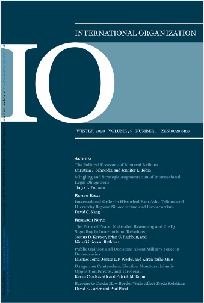

收录于合集
推荐语
在国际关系不断发展的今天，外交与法律的关系越来越密切。本文展现了美国这一全球法律大国如何运用政治和法律手段让其国民规避国际刑事法院的管辖，从而维护国家自身利益。美国的一系列手段也可使中国读者对美国的法律外交管中窥豹，以小见大，从而在未来的国际博弈中知己知彼，百战不殆。
作品简介
【作者】 Tonya Lee Putnam 哥伦比亚大学政治学副教授
【编译】 戴赟（国政学人编译员，外交学院国际关系研究所）
【校对】 柯孜凝
【审核】 姚寰宇
【排版】 王国伟
【来源】 Putnam, T. L. (2020). Mingling and Strategic Augmentation of International Legal Obligations. International Organization, 74 (1), 31-64.

期刊简介

《国际组织》（International Organization），简称“IO”，是一份经过同行评议的季刊，涵盖国际事务的各个领域。它创刊于1947年，由剑桥大学出版社代表国际组织基金会出版。2018年影响因子4.508，在91种国际关系期刊中排名第1。
国际法律义务的混合和战略性扩充
Mingling and Strategic Augmentation of International Legal Obligations
Tonya Lee Putnam
内容提要
处理外交事务在很大程度上要预测他人的作为(或不作为)，并采取措施限制意外和不希望的事件的发生。长期以来，在处理这些任务中，法律规范一直被认为是重要的。然而，常规的国际关系处理中往往忽略了法律的重要性，甚至在解释国际法对行为的影响时也被忽视。在这些被忽视的属性中，最主要的事实是法律规则是为普遍适用而制定的，这意味着法律规则与它们可能适用的全部事实相比缺乏确定意义。因此，需要解释选择和使用法律规则来指导或评估行为。自利的行为体可能在单个规则的适用性、范围或含义方面存在差异，在涉及多个法律规则的情况下更是如此。在政治利害关系很大的情况下，有权势的行为体可能不满足于明示所有选择。相反，他们会运用解释策略，将不同协议的义务混合在一起，并在必要时扩充相关方的法律义务，以达到前瞻性地确保目的，确保在具体的执法情形推动下，制定更具强制力和强调执法者作用的法律。作者通过重新审视美国无法接受其公民遭受国际刑事法院(International Criminal Court,下文称ICC)的管辖，展示了协议如何在复杂的法律环境中发挥混合和扩充的作用。
文章导读
处理外交事务在很大程度上是为了预见他人的作为(和不作为)，并采取措施限制意外和不希望的事情发生。长期以来，对于这些工作，法律一直被认为相当重要。为了实现从降低贸易壁垒、建立环境和资源保护到避免武装冲突的目标，各国政府和官员经常把国际法作为协调的工具。目前关于国际法的影响和效力的许多传统研究是建立在未理论化的基础之上的，忽视了法律和合法媒介决策的三个至关重要的属性。
第一个属性是语义不确定性（semantic indeterminacy) 。法律规则是为普遍适用而制定的，因此需要作出解释，以确定其对具体事实的适用性和意义。因此，不同的行为体可以就某项规则的适用合理地得出不同结论。第二，没有任何国际法律规则是孤立运作的。这意味着不仅很少有重要的国际事务问题只涉及单一的法律，而且意味着法律是一套规则体系，包括许多直接关系到其他规则执行的规则。第三，法律不自动援引、解释或适用，需要当事人进行援引适用。出于不同的目的，不同的当事人会选择在不同的时间援引不同法律和不同的义务。
孤立地研究法律规则会导致研究人员将影响归因于完全虚无之处。忽视这些法律属性，本质上使国际关系学者对深奥的国际政治互动体系中存有盲区，在这一体系中，法律规则和合法媒介行为是核心特征。然而，关于法律本身的性质和法律程序的明确观点仍远未普及，这使得有动机驱动的行为体会在战略上加以利用。
作者描述并理论化了两种交叉解释策略，它们源于作者前面概述的法律性质。第一种策略是法律混合（legal mingling）,涉及利用两种或两种以上的法律义务来解释其中一种内容与另一种内容的关系。混合可能涉及重新修改义务以提出合法要求。
第二种策略是战略扩充（strategic augmentation） 。战略扩充可以包括制定新的双边或多边承诺。它还可以包括修改或删除现有的义务。值得注意的是，进行混合和扩充的目标不必局限于协议的主要目的。
语义的不确定性以及作者描述的语境差异强烈地表明，所有的法律规则都可以支持多种范围的应用解释，并非所有的解释都是一致的。不过，这并不意味着解释者可以随心所欲地解释。即使是实力雄厚的行为体，通常也不能单方面重新解释国际法规则，使它们的意义完全不同于习惯上的使用方式。
因此，在政治利害关系很大的情况下，有关行为体可能不愿意放任解释性选项处于未被确定之中。相反，他们可能会积极尝试塑造潜在参与者如何解释他们自己和他人的义务，以揭示、稳定或改变他们的偏好和意图。
作者将通过重新审视美国为使其公民免受国际刑事法院(ICC)的管辖而所做的努力，来展示在复杂的法律环境中，运用协议混合和扩充是如何发挥作用的。
01
从早期支持海牙到威胁“渗入海牙”
From Early Sponsorship to Threats to “Invade the Hauge”
在20世纪的90年代的大部分时间里，美国支持设立一个审理国际刑事案件的常设法庭。然而，1998年7月17日在罗马举行的联合国全权代表会议上，120个国家通过了相关协议，但从某种程度上看却是美国的失败。美国不满的核心是，首席检察官被授予了独立权威，有权在未经被起诉者国籍国批准的情况下展开调查和提出起诉。此外，《罗马规约》责成其缔约国合作，以确保对所有被国际刑事法院起诉之人的羁押。因此，即使美国没有加入国际刑事法院，美国公民和其他非缔约国公民如果在国际刑事法院成员国的领土被逮捕，(理论上)可能会因国际罪行而被迫在海牙接受审判。
美国的一个核心关切是国际刑事法院可能会被用来对美国官员和军事人员提出“政治”指控，而这些国际罪行的规定颇有争议。国际刑事法院于2002年7月1日成立。两周后，美国发起了一项政策，要求与美国有外交关系的每一个国家签署一项协议，承诺在未经美国同意的情况下不会向国际刑事法院“移交”（surrender）任何美国公民。这些协议的唯一目的是制造一种相互冲突的义务。有一些国家认为这些协议违背了《罗马规约》的精神。而这一政策的设计者则坚持认为，其目的不是要削弱国际刑事法院，而是要保护美国人民免受任何出于“政治动机的刑事指控、调查和起诉”，这些指控可能源于美国对国际安全事务的全球参与。因此，美国政府寻求利用双边手段来实现它在多边方面未能实现的目标，并利用国际法和法律程序来实现它仅用政治手段无法实现的目标。
美国国会通过了2002年《美国军人保护法案》(American Servicemembers Protection Act, ASPA)，加强了上述努力。该法案禁止美国官员协助国际刑事法院，并不光彩地授权总统使用“一切必要和适当的手段”来确保被国际刑事法院拘留或代表国际刑事法院拘留的美国个人获释——这一条款为《美国军人保护法案》带来了“海牙渗入法案”的绰号。
02
最大限度地减少美国受到国际刑事法院(ICC)管辖的法律风险
Minimizing US Legal Exposure to ICC Jurisdiction
对于外国选择在未经美国的允许下将被起诉的美国公民移交国际刑事法庭的做法，美国是否成功地在法律上设置了障碍?仅从推动各方承诺签署双边不移交协议（bilateral non-surrender agreement）的角度来看，美国只取得了部分的成功。事实上，国际体系中近一半的国家，包括国际刑事法院的许多成员国，拒绝采用不移交协议（non- surrender agreements），其中有几个是美国最亲密的经济和安全伙伴。然而，仅仅考虑美国政府在多大程度上能够将美国公民与国际刑事法院的管辖权隔离开来，并与国际刑事法院成员国一起采取不移交协议，就忽略了大量相关信息。这是因为美国官员并没有在一个法律真空（legal vacuum）中设计和实施国际刑事法院的不移交协议倡议。
其他国际协议，主要是《引渡条约》（extradition treaties）、《部队地位协定》(status of forces agreements, SOFAs)和《司法互助协定》(mutual legal assistance treaties, MLATs)也与美国无法接受国际刑事法院管辖权的影响直接相关。因此，在复杂的法律和政策环境下，将注意力限制在外国是否签署单一协议(在这里是双边不移交协议)的决定上，会导致对美国政府的努力和其他政府的反应做出不完整且潜在错误的理解。
03
引渡义务的混合和扩充
Mingling and Augmentation of Extradition Obligations
国际刑事法院不移交协议（ICC non-surrender agreements）只是美国努力排斥国际刑事法院对美国公民管辖的广泛政治策略之一。《引渡条约》、《部队地位协定》(SOFAs)和《司法互助协定》(MLATs)都包含了一些条款，美国政府可以利用这些条款来阻止其无法接受的移交。
●根据《引渡条约》，缔约国有义务根据另一方缔约国的要求，将被起诉的个人移交另一方拘留以进行刑事指控，前提是符合条约规定的条款。旧时引渡条约一般会列出可能要求引渡的严重罪行的清单。当代引渡条约要求“双重犯罪”（ dual criminality）——即可引渡的罪行必须在请求国和被请求国都被认为是犯罪。所有的引渡请求均须遵守“特定原则”（ rule of specialty），该规则要求各国仅以请求中规定的罪名起诉被引渡的个人。
●《部队地位协定》（SOFAs）对经外国政府同意而部署在国外的军事力量行使刑事和民事管辖权。由于在国际刑事法院的授权范围内，大多数国际犯罪都涉及使用致命武力，这样的安排会直接影响到美国军人在被迫移交时处于不利地位。虽然美国部队地位协定的范围和细节各不相同，但大多数国家对其军人在执行公务期间所指控的罪行给予美国专属刑事管辖权。一些国家还对随行文职人员授予美国专属管辖权。
●《司法互助协定》（MLATs）为国际执法和刑事司法程序中的信息共享与合作规定了条件。它们可以是双边的，也可以是多边的。与《引渡条约》一样，《司法互助协定》（MLATs）通常对可请求的信息类型和可用的信息目的加以限制。如果利用美国官员提供的部分信息在国外获得对美国公民的羁押权，《司法互助协定》可能使个体移交至第三方（如国际刑事法院）和提供国际刑事法院诉讼所需的证明或书面证据变得更难。
混合《部队地位协定》(SOFAs)、《引渡条约》和《司法互助协定》(MLATs)为移交被起诉的美国公民设置了一个障碍，这与国际刑事法院的不移交协议(ICC non-surrender agreements)作用相当。
04
行动中的混合与扩充
Mingling and Augmentation in Action
当《罗马规约》通过时，美国与21个国家签订了《部队地位协定》(SOFAs)。1998年7月至2002年8月，美国与另外27个国家正式确立了司法协助义务，其中包括16个国际刑事法院成员国。在国际刑事法院的不移交协议(ICC non-surrender agreements)推动期间，另有25个国家加入了《司法互助协定》(MLATs)，其中18个国家是《罗马规约》的缔约国。这其中又有8个国家，于2003年在欧盟与美国之间的多边《司法互助协定》（MLATs）中创设了以前没有规定的义务。在此期间，拉丁美洲有10个国家(包括5个国际刑事法院成员国)同样批准了美国于2001年1月加入的《美洲国家间刑事互助公约》。
作者想要明确地是，这一论点并不是说在此期间美国与其他国家签署《引渡条约》、《部队地位协定》(SOFAs)和《司法互助协定》(MLATs)的唯一原因是使美国公民免受国际刑事法院的管辖。而是想说，具有互惠性质的《引渡条约》和《司法互助协定》不容易着手进行，而必须在对伙伴国的国内机构和法律体系进行实质审查后才能缔结。尽管如此，这些协议至少在其他方面是可行的，它们为美国提供了另一种方式，以确保美国不用对国际刑事法院进行移交。
05
结 论 Conclusion
作者在上文介绍了美国避免国际刑事法院管辖权的一些战略。这种战略行为理论涉及了法律，更好地反映其作为协调和强制手段的属性，使关于国际“法治”的自由规范观念复杂化。在相关事例中，美国通过法律混合和扩充的手段，使美国公民不受国际刑事法院的管辖。值得去考虑的是，美国的干涉都是在狭义范围内进行调整并彻底显现出了法律工具论者（legalist）的形态。
其他例子还体现了各国政府混合和扩充法律安排以实现对他们来说重要的目标，但这安排不为所有人所共享，这包括优惠贸易协定（PTAs）和区域贸易安排，这有时被批评为破坏了在当前国际贸易体制基础下的“最惠国待遇”原则。然而，在任何情况下，这些专门性文件并不打算破坏一般性的法律安排，而是有选择地进行调整，在更大规模范围内实行深化合作。
协议混合远非一项边缘、孤立的活动，而是一个关键且长期存在的操作，协议参与者通过此种混合操作描述和讨论方式构造协议义务，并显现这些义务是如何用适用的术语表现出来的。
译者评述
本编译是对原文作者“国际法律义务的混合和战略性扩充”文章的节选，以揭示“美式法律主义”。对此，作为译者，我主要有两点感悟。
第一，关于美国加入国际组织的看法 。文中提到，在一开始，美国支持设立一个处理国际刑事案件的常设法庭，然而美国前总统克林顿于2000年底签署了《国际刑事法院规约》，但未将其送交参议院审议，布什政府多次表示反对规约，原因是美国一直担心，一旦成为缔约国，美国军人和政府官员可能受到出于政治目的的起诉。因此，美国从一开始的支持国最终并未变成缔约国。这一幕与1920年成立的国际联盟似曾相识，威尔逊带着他的“十四点计划”来到巴黎和会，想成立国际联盟，但因与英、法争夺领导权失败，美国最终未加入国联。从上述两个历史事件来看，美国创立或加入国际组织并非真正为了世界和平或是为了解决国际问题，更多地是为了其本国利益服务。而当国际组织的作用无法满足其本国利益时，美国便会选择不加入，甚至是退群。最近几年，美国频繁退群的行为，如退出巴黎气候协定，退出联合国教科文组织等也是对此的应证。面对美国的退群，中国还是应当坚定维护国际多边主义，坚持主张公正的国际政治秩序，展现负责任的大国形象。
第二，从本文中可以看出，美国在处理相应的国际关系问题中，喜欢采用政治与法律糅合的方式应对国际问题 。本文谈到了美国如何作为以达到其不想受制于国际刑事法院管辖权的目的。美国灵活运用了法律政治化和政治法律化的方式使其规避国际刑事法院对其本国公民的管辖。在法律政治化上，面对管辖权这一法律问题，美国采取外交途径，与其他国家签订相关协议，架空国际刑事法院的司法管辖。在政治法律化上，美国与其他国家签订相应的司法互助协议，使其为本国国民免受国际刑事法院管辖的政治目的以法律条约的形式稳固下来。美国对于法律政治化和政治法律化的炉火纯青之运用，确实值得中国借鉴和反思。在国际形势波云诡谲的当今社会，越来越多的冲突与挑战都是包裹着政治图谋和法律形式这两方面的内容而呈现出来的。中国若想在全球治理的能力中更上一层楼，必须一方面提出良好的施政理念，另一方面还需牢牢抓住法律工具。法律是门技术，需要大量知识囤积和事先储备才能在遇到问题时运用自如。良好的理念，雄厚的实力，稳固的技术可以为中国在国际社会赢得“潮平两岸阔，风正一帆悬”的良好处境。
外交与法律从来就密不可分，把外交政策通过法律规则来实现，用法律来解决外交问题，是外交发展的高级形态。【1】在本文所讨论的国际刑事法院管辖权这一问题中，美国充分地将法律、政治和外交进行融合与运用，在相关问题上运用法律方式实现了对自己有利的政治目的。面对当今百年未有之变局，国际关系中的法律因素明显增强，外交中的斗争越来越激烈，外交与法律的关系更密切，国际法作为国际关系和国际秩序“稳定器”的作用更趋重要。【2】
随着中国国际地位的不断提升，中国必将在全球治理过程中发挥更大的作用，中国法治与国际法治的良性互动将会更加活跃。这不仅能够增强中国的国际话语权，提升中国的国际形象，而且有助于推进中国法治的进步，进一步地扩大开放并加速构建互利双赢的和谐世界。【3】
参考文献：
【1】 严文君：《中国特色大国外交的国际法解读——评黄惠康大使著<中国特点大国外交与国际法>》，载《国际法研究》，2020年第2期，第126页。
【2】 黄惠康：《中国特色大国外交与国际法》，北京，法律出版社，2019年版，第8页。
【3】 参见赵骏：《全球治理视野下的国际法治与国内法治》，载《中国社会科学》，2014年第10期，第99页。
本文由国政学人独家编译推荐文章观点不代表本平台观点

好好学习，天天“在看”
国政学人
支持学术公益与知识传播
微信扫一扫赞赏作者 __赞赏
已喜欢，对作者说句悄悄话
取消 __
发送给作者
发送
最多40字，当前共字
上一页 1/3 下一页
长按二维码向我转账
支持学术公益与知识传播
受苹果公司新规定影响，微信 iOS 版的赞赏功能被关闭，可通过二维码转账支持公众号。